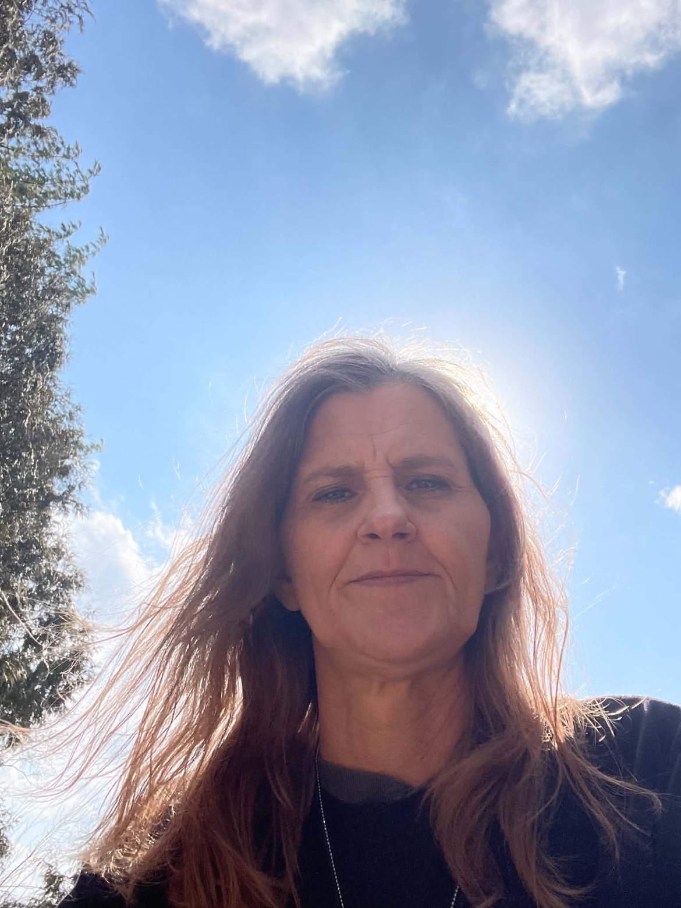

About Amy

“You’re not separated from the Christ inside you. You’re a soul in a human experience.”
Amy Lyn Bassett is a master intuitive, psychic, medium, and energy channel. Her work, in her words: “Healing the mother and father trauma and creating lasting relationships through divine intervention.”
She holds compassion and space for others to heal from her own blueprint — how she healed her own mother and father trauma, then relationships, then money: love, wealth, health, and abundance in all of its forms. Healing, as she teaches it, is to build the new foundation from within — releasing old energy, patterns, and looping thoughts, and knowing where the feelings come from.
Her fuller story stands in her own words in her memoir — the child who could feel what everyone around her was carrying, the pattern that ran through her family, and the woman who finally said the bleeding stops here.
“Two worlds became one in me. Now let me help you merge yours.”